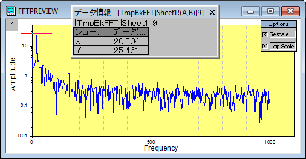

IIRフィルタ
IIR-Filter
概要
OriginではIIR（無限インパルス応答、Infinite Impulse Response）型のデジタルフィルタのデザイン、分析、活用を行えます。IIRフィルタはButterworth、第一種Chebyshev、第二種Chebyshev、楕円の4つの方法を備えています。
これで信号処理を行うユーザに、より多くの選択肢を提供します。
必要なOriginのバージョン: 9.0 SR0以降
学習する項目
このチュートリアルでは、以下の項目について説明します。
- IIRフィルタの作成と活用の方法
- IIRフィルタとFFTフィルタの違いを比較
ステップ
IIRフィルタの作成と活用
- 新しいワークシートを開き、EMG Recording.datファイルを\Samples\Signal Processing\からインポートします。
- 列Bを選択し、上部のメニューから解析：信号処理：IIRフィルタと選択してダイアログを表示します。
- レスポンスタイプをハイパスに設定し、手法はButterworthのままにします。そして、フィルタ順の最小のチェックを外して4と入力します。周波数仕様ブランチではカットオフ周波数（Fc）を20に設定します。そしてForward-Backward Filteringのチェックをつけます。ダイアログの設定は次の図のようになり、IIRフィルタが作成されます。
- OKをクリックして作成したIIRフィルタで入力データセットを処理します。
- 新しい列が元のデータセットに追加され、フィルタ後のデータとして表示されます。そして、新しいSOSMatrixワークシートが作成されます。
FFTフィルタと結果を比較する
- 元のワークシートで列Bを選択します。そして、解析：信号処理：FFTフィルタと選択してFFTフィルタを実行します。
- 開いたダイアログで、フィルタの種類でハイパスを選択し、カットオフ周波数を20に設定します。
- OKボタンをクリックします。EMGRecordingワークシートの列Cは先程作成したIIRフィルタでフィルタをかけた結果です。列Bと列Cを選択して、
 ボタンをクリックし、折れ線グラフを作成します（Graph1）。
ボタンをクリックし、折れ線グラフを作成します（Graph1）。
- スケールインボタン
 を使って12.5sから13.3sの範囲にズームインします。
を使って12.5sから13.3sの範囲にズームインします。
- EMGRecordingワークシートの列EはFFTフィルタのフィルタ結果です。列Bと列Eを選択してボタンを押す事で折れ線グラフを作図します（Graph2）。
- 再びスケールインボタンを使って12.5sから13.3sの範囲にズームインします。この2つのグラフを使用して視覚的な比較を行えます。
- 上記画像から分かる事は、FFTフィルタの結果には小さな波が多くありますが、IIRフィルタの結果にはほとんどありません。
FFTフィルタで出来る小さな波
- E列を選択してボタンをクリックし、折れ線グラフを作図します（Graph3）。
- Graph3をアクティブにして、メニューからガジェット：FFTROIツールと選んでからXスケールを12.664から13.052までにするように設定します。
- OKをクリックしてプレビューウィンドウを開くと、小さな波の正体が20.125 Hzにあるサイン波である事が分かります。
- 
- では、この20.125 Hzの波紋を取り除いてみましょう。そのためには25Hzのハイパスフィルタをもう一度行います。列Eを選択したまま、メニューから解析：信号処理：FFTフィルタと操作します。
- フィルタの種類からハイパスを選び、カットオフ周波数を25にします。
- 結果は列Gに表示されるので、列Gを選択して折れ線グラフを表示するためにボタンをクリックします（Graph4）。
- Graph4をアクティブにし、メニューからガジェット：FFT ROIツールを選択してXスケールを12.664から13.052へ設定します。プレビューウィンドウにはそれでも小さな波が見られます。周波数が20.125 Hzから25.157 Hzに移動しただけです。
- つまり、このデータセットにおける小さな波は、FFTフィルタでは取り除けない事を示しています。